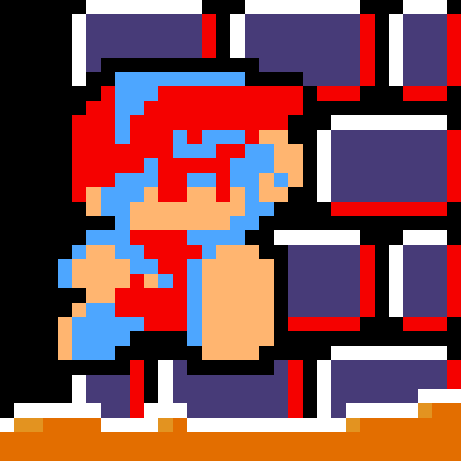

ABOUT US!

ABOUT ME:
Welcome! This website is a non-profit gimmick I created to test a ton of things for coding and to just have fun! However, I do explain a bit about my goofy characters dubbed all from my namesake, Sepore. I created this name a long time ago, and until 2 or so years ago, the name never had any 'meaning' to it. I've decided to create some 'lore' about the name and its origins. It's a dumb playaway to explain my stupid ideas lolol.
SEPORES WEBSITE V1 (THE COOL UPDATE):
On April 1, 2024, I got the sudden idea to create a website diving into the 'lore' of my name, Sepore. To bring this idea to fruition, why not create a somewhat diverse website using my common knowledge and things I've learned from classes? Well, I did and this is the finalized product (sorta). I will continue updating this website until I have expanded the lore of Sepore to every minute detail :)